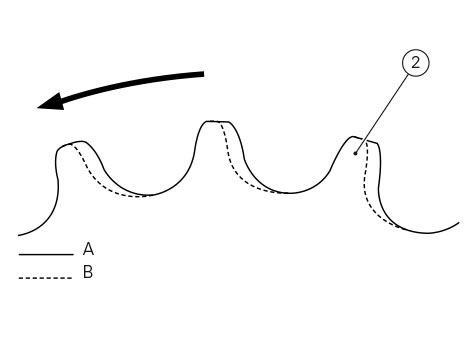

Inspection of the final drive
To check the final drive wear, visually check the front sprocket (1) and the rear sprocket (2).
If the teeth are worn as shown in the figure (dotted line), the final drive must be replaced.

To check the chain (3), keep the chain taut and measure 16 links.
If the length (L) is greater than 256.5 mm, the chain should be replaced.
Make sure that the rear sprocket (2), front sprocket (1) and chain (3) are all replaced together as a set.